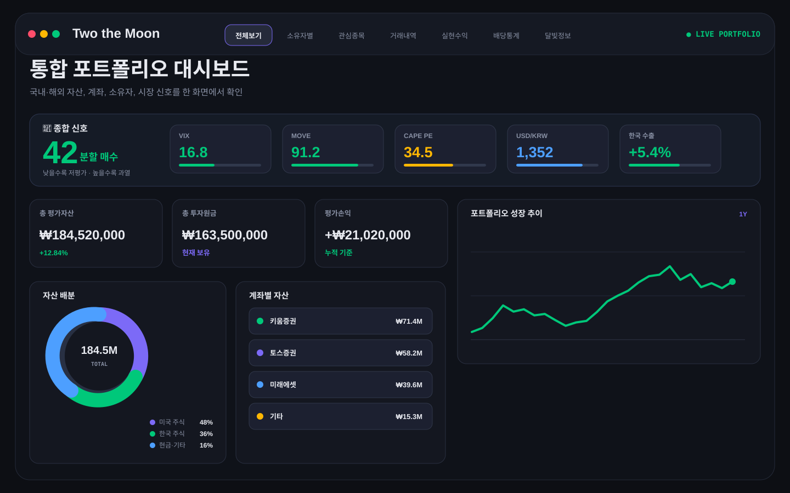
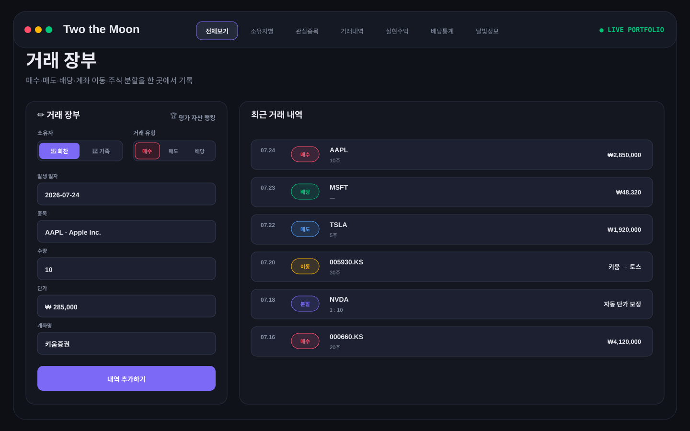
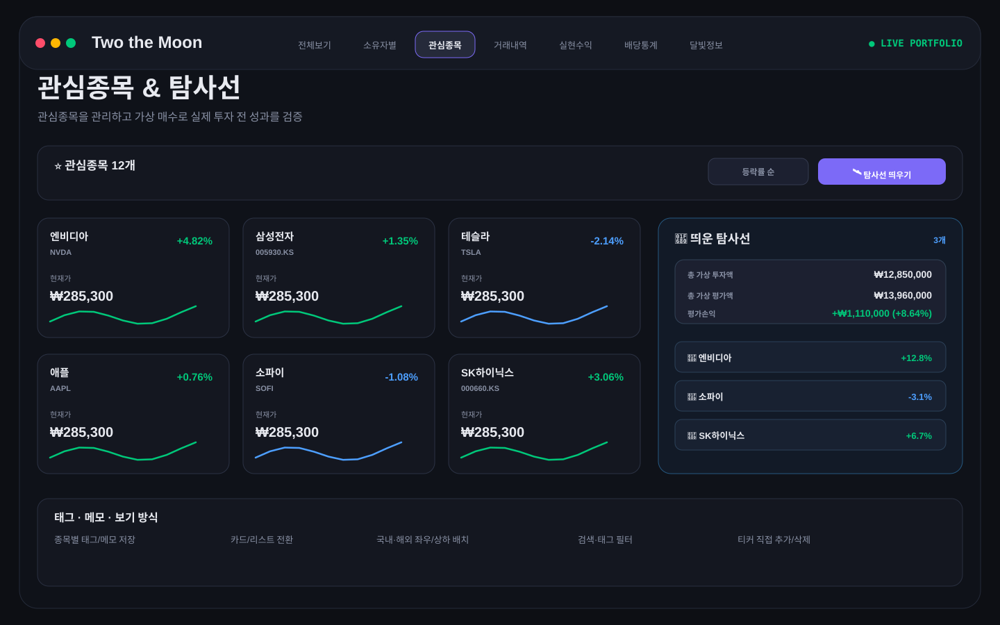
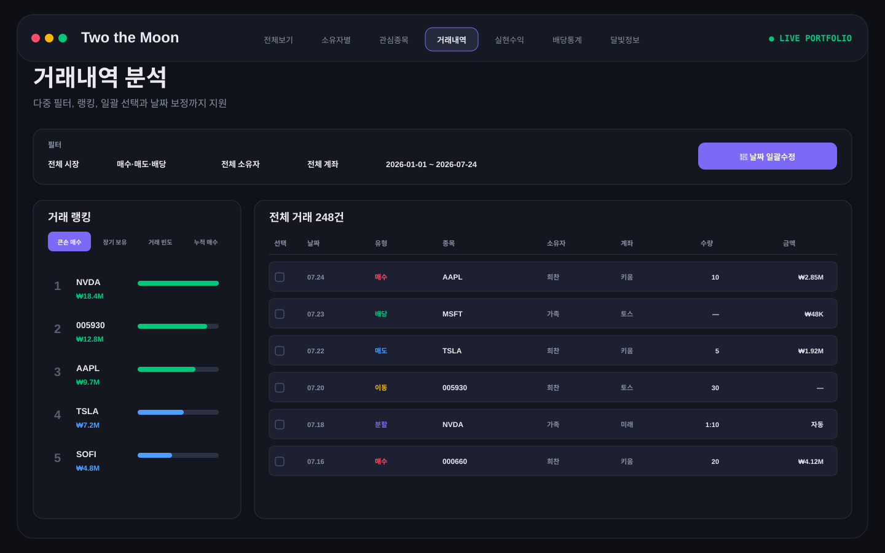
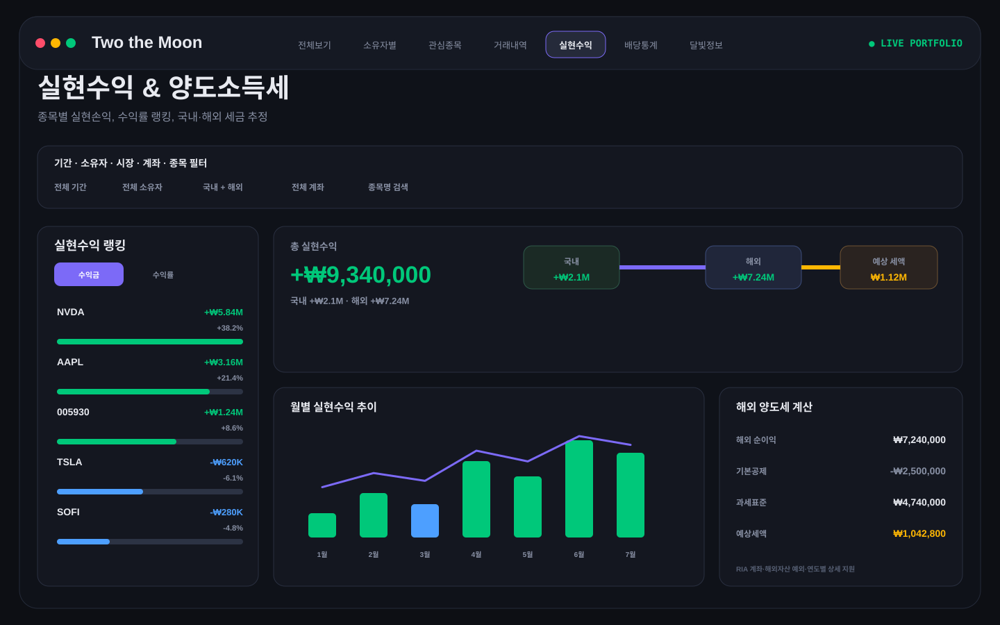
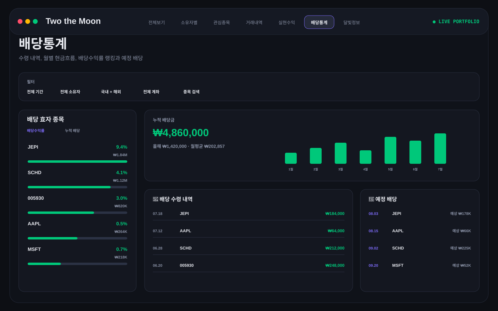
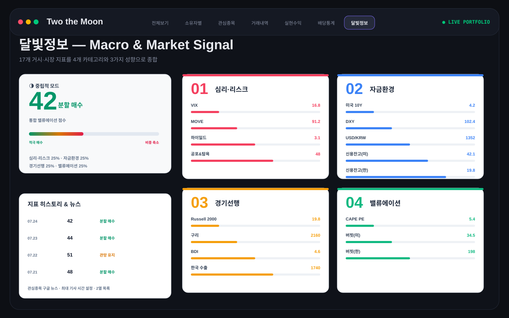
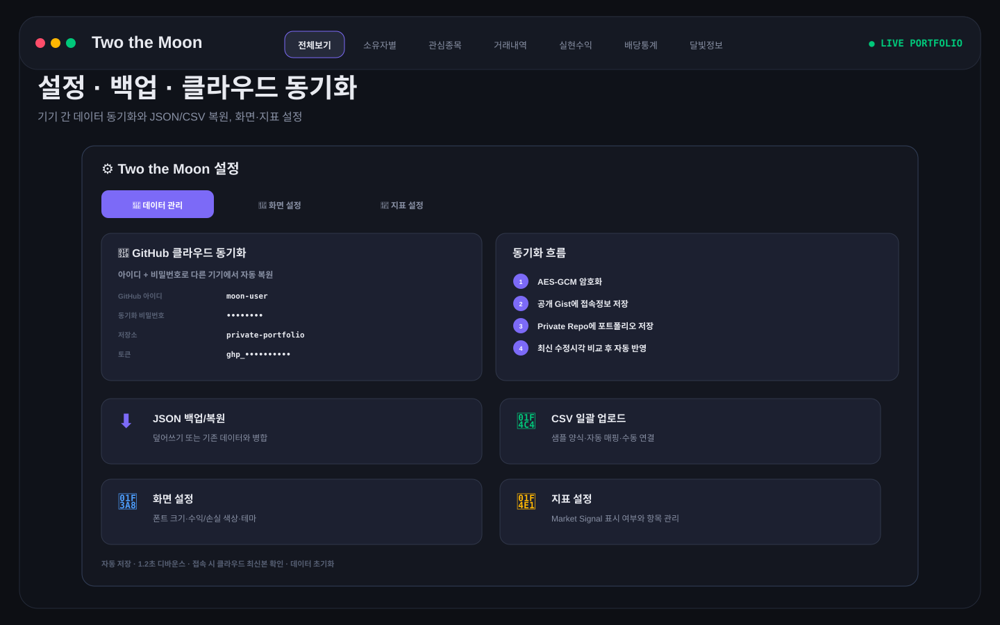
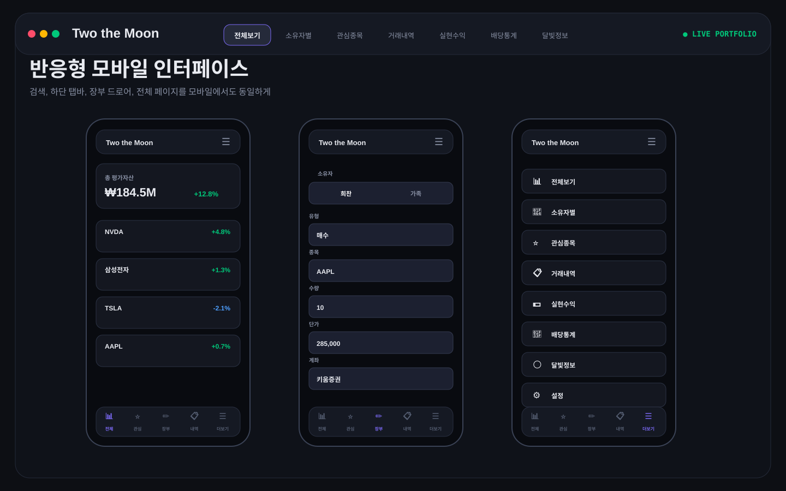

거래 기록
매수·매도·배당·이동·분할
Two the Moon은 국내·해외 주식 거래를 기록하고, 현재 자산과 실현수익·배당·세금을 분석하며, 관심종목 가상투자와 목표가 관리, 거시지표, AI 조언까지 한 화면 흐름으로 연결하는 개인 포트폴리오 대시보드입니다.

거래 장부에 입력한 데이터는 보유자산, 거래내역, 실현수익, 배당, 세금, AI 분석까지 자동으로 연결됩니다.
매수·매도·배당·이동·분할
수량·평균단가·평가손익
실현수익·배당·세금·랭킹
탐사선·비행 계획·AI 조언
보유자산의 현재 상태와 시장 분위기를 동시에 확인하도록 설계된 메인 대시보드입니다.
모든 대시보드 계산의 기준이 되는 거래 입력 영역입니다. 단순 매매뿐 아니라 계좌 이동과 주식 분할까지 반영합니다.

관심종목은 단순 목록이 아니라 검색·분류·가상투자를 통해 투자 후보를 관찰하는 워크스페이스입니다.

수백 건의 내역에서도 원하는 거래를 빠르게 찾고, 여러 거래의 날짜를 동시에 정리할 수 있습니다.

평가손익과 별도로 매도한 거래의 확정 손익을 계산하고, 해외 주식 양도소득세 예상치를 연도별로 정리합니다.

받은 배당금뿐 아니라 평균단가 대비 배당수익률과 예정 배당까지 이어서 확인합니다.

시장 공포, 유동성, 경기 선행, 밸류에이션을 각각 점수화하고 성향에 따라 종합 신호를 제공합니다.

브라우저 로컬 저장을 기본으로 사용하며, 사용자가 설정한 GitHub 저장소를 통해 기기 간 동기화할 수 있습니다.

작은 화면에서는 복잡한 상단 탭을 하단 탭바와 더보기 드로어로 재구성하고, 거래 장부를 필요할 때 열도록 설계했습니다.

페이지별 세부 기능을 빠르게 확인할 수 있습니다.
통합/소유자별 자산, 현재·누적 모드, 기간 선택, 국내·해외 분리, 총자산·투자원금·평가손익, 포트폴리오 차트, 자산배분, 계좌별 자산, 계좌 성장차트, 트리맵, 다중선택, 시장·태그 선택, 오늘의 종목, 정렬, 검색, 태그, 카드/리스트, 좌우/상하 배치.
소유자 선택, 매수·매도·배당·이동·분할, 일자, 종목 검색, 시장 필터, 수량, 단가, 한글 금액 표시, 배당 세금 처리, 출발 계좌, 분할 미리보기, 계좌 태그, 추가, 수정, 삭제, 소유자 즉시 변경.
검색 추가, 직접 티커 추가, 삭제, 태그·메모, 태그 필터, 정렬, 보기 전환, 상세 차트, 기간 탭, 매매 마커, 보유 요약, 계좌별 보유, 매매 요약, What-if, 탐사선 발사, 비행계획, 신규 카드 강조.
시장·유형·소유자·계좌·종목·날짜 필터, 날짜 프리셋, 달력 기간 선택, 연도/월 선택, 필터 배지, 큰손·보유기간·빈도·누적 랭킹, 오름/내림차순, 다중선택, 날짜 이동·치환·설정.
실현수익 합계, 국내/해외 구분, 수익금·수익률 랭킹, 월별 차트, 종목 매도 상세, 다중 필터, 양도세 추정, 기본공제, 연도별 계산, RIA 계좌 처리, 제외종목, 수동 해외자산, 연도 상세, 거래일 환율, 손익 흐름.
누적·연간·월평균 배당, 월별 차트, 배당수익률/누적배당 랭킹, 랭킹 정렬, 시장·소유자·계좌·종목·날짜 필터, 수령 내역, 세전 자동세후, 예정 배당.
적극적·중립적·보수적 모드, 통합점수, 최종 의견, 4대 카테고리, 17개 지표, 지표값·변화량, 위치 게이지, 스파크라인, 출처 링크, 히스토리 표, 관심종목 뉴스, 기사 경과시간 설정.
탐사선 개별/합산 가상손익, 발사 마커, 도킹·탈출·연료 가격, 근접 알림, Gemini 분석, 후속 질문, 기록, 모델 설정, GitHub 저장/불러오기, 자동동기화, 암호화 Gist, 최신본 비교, JSON 백업/복원/병합, CSV 샘플/업로드/매핑, 테마, 폰트, 색상, 지표 표시 설정, 전체 초기화.
대시보드로 돌아가 거래를 기록하고, 나만의 포트폴리오 흐름을 시작하세요.